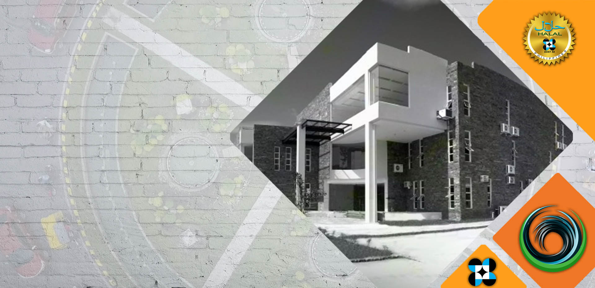

The Philippines National Halal Laboratory and Science Center is the premier institution under the Department of Science and Technology Regional Office 12 in the Republic of the Philippines.
The PNHLSC is manned and managed by competent and dedicated Muslim Ranking Officials, scientists and employees that ensures authenticity of results from tests and analysis of Products and maintain integrity and discipline to sustain customers trusts and confidence for the certified by the PNHCL Halal Products made by Filipino Manufacturers and exported from the Philippines to the global markets.
The PNHLSC is equipped with state of the art laboratory equipment indispensable to determine the genuineness of Halal Products and can guarantee that its certified Halal Products of the manufacturers being supplied to the local and international consumers are authentic and free from adulteration and critical ingredients.
The PNHLSC is the main source of science and technology on Halal that can assist Halal patrons, practitioner, scientists and technologists including researchers and the academe and those that vested their interest upon Halal for their economic prosperity and physical wellness and improvements.
The Philippine National Halal Centre and Laboratory is mandated to coordinate science and technology on Halal and ensure that the results therefrom will be utilized for the maximum benefits of the producers and consumers of Halal products.
By 2020, the Philippine National Halal Centre and Laboratory will be the main passport of Halal Industry Products for both local and international consumers and the source of Halal knowledge for scientists, researchers and practitioners.
Halal consultancy services has dedicated field of specialize in the Halal market. We've anticipated the rapid rise in interest during this field, and that we have dedicated ourselves to developing specific experience in this niche sector. Our network of contacts, stakeholders, Islamic agencies,and Certification Bodies. DOST Region XII Consultants has designed up a novel, dynamically evolving image of the Halal market globally. At DOST XII, we provide consulting services to SME’s, Governments, Business Stakeholders, service suppliers and different agencies seeking to extend their competitive advantage during this advanced and apace dynamical sector.
This is one certification that food institutions can attempt to acquire. As a result, it will increase their client base. Individuals will touch on problems relating to culture, or spiritual harmony. However, as an area wherever we tend to far-famed for our food, the halal certification is perhaps one amongst the most important impacts of Islam Globally. DOST XII certifies the product underneath the reverent coordination of recognized Islamic law higher-up Board, extremely qualified Food Technologists, and R&D professionals in respect of eligibility for Certification through analysis primarily based methodology scrutinizing the sources of ingredients, examining the whole offer chain, chemical examination and analyzing sharia law prospects of ingredients used among the product.
To Establish Halal work Synergize with Government and Non Government authorities for Halal Research and Development. Develop a Globally network for Halal business analysis for sharing the experience internationally. The Halal world market is promising a fast and sustained growth. The reasons of the prompt growing are multiple. The importance of this market has on the worldwide scene, discussing in-depth development from the social control and innovation management views. galvanized by this chance, DOST XII try to explore comprehensive innovation method leading firms from Haram to Halal product within the food business.
Halal Standardization is that the method of implementing and developing halal technical standards supported the agreement of different parties that embody corporations, users, interest teams, standards organizations and governments standardizations will facilitate to maximize halal compatibility, ability, safety, repeatability or quality. Generally, our Halal Assurance System adheres to the Halal Standards set by the OIC-SMIIC. And since each country has specific statutory and regulatory requirements, the same must also be complied accordingly. The firm to be granted Certificated on Halal Quality Assurance must undergo thorough Halal assessment and evaluation by DOST XII in partnership with the Ulamas and Shariah Lawyers, whenever necessary. Finally, products must passed thru Halal Laboratory Test Analyses thru the DOST XII Halal Laboratory. Aside from testing and analyses, we carry-out Packaging and Labelling.


We are committed to provide latest technologies and reliable
testing solution with improved efficiency in assessment of
Halal food integrity. We provide Real Time PCR and
Conventional PCR
Processing Days takes:
Real Time PCR- 14
days
Conventional PCR- 14 days

Alcohol can develop in foods as fermentation by products or
it can be added to products as synthetic ethanol. We use GC
method.
Processing Days takes: 7 days

Fatty Acids profiles can be used for determining the purity
or authenticity of animal fats. In this method we use GCMS.
Processing Days takes: 14 days

A Wholesome Analysis that is for safety, cleanliness, nutritious, quality, authentic process.


We test foods products to ensure that they are free from
pathogenic bacteria and to assess hygiene standards. Tests
can be carried out for routine quality control purposes.
Every food product has to be tested & approved before it is
put up for sale in the market. Microbiological testing also
for waters can include production water, potable, bottled,
effluent & environmental water.
Processing days: 7 days

Chemical testing Analysis is vital for regulatory compliance
and to understand the quality and composition of chemical
substances and ingredients that are used in the water and
food products.
Processing days: 7 days

The analysis of value and the nutritional content in foods
and food products, will provides information for nutrition
labeling on food packaging that manufacturers are required to
comply with the labeling regulations of destination
countries.
Processing Days: 1 month

Trace metals found in food and water can be nutritionally
beneficial, or highly toxic depending on the type of metal
and its concentration
Processing days: 7 days